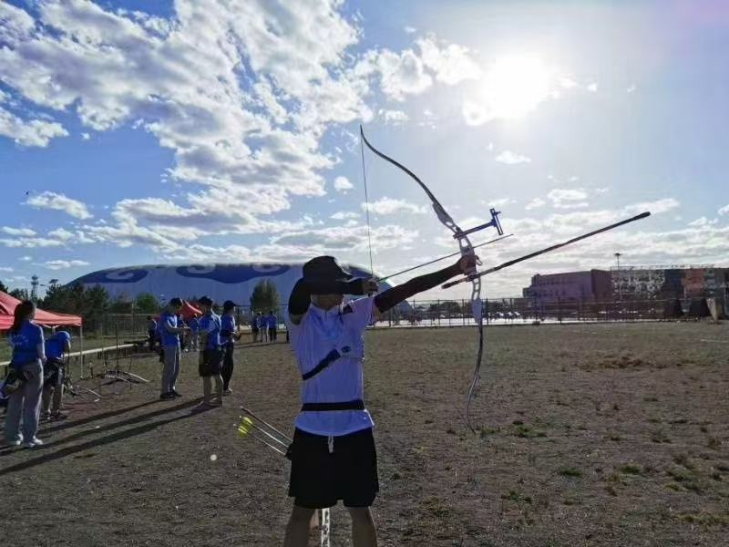
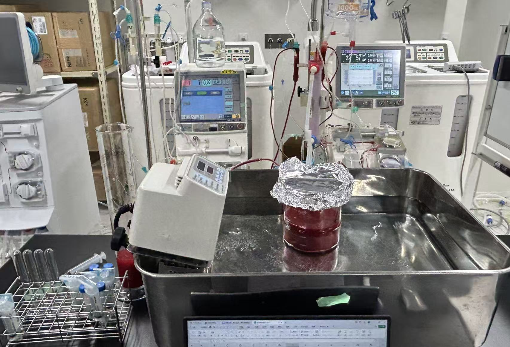

Haochen Zhao
I am a master's student at the Graduate School of Medical Sciences, Kitasato University. My research focuses on blood purification therapy, especially hemodialysis, online HDF, and the performance evaluation of dialysis membranes.
About Me
I am an international student from China, originally from Ordos, Inner Mongolia. I studied Biomedical Engineering during my undergraduate education in China and later came to Japan to continue my academic training in medical sciences. My current interests are closely related to clinical engineering, dialysis technology, and the connection between experimental research and clinical practice. Outside of research, I enjoy sports. I was a member of the university archery team during my undergraduate years.

Archery practice during my university years.
Affiliation
Graduate School of Medical Sciences, Kitasato University
Field
Clinical Engineering, Blood Purification, Hemodialysis
Languages
Chinese, Japanese, English, a little Mongolian
Research Interests
My research aims to evaluate dialysis treatment and membrane performance using both experimental and clinical data. I am particularly interested in how dialysis conditions and membrane characteristics influence middle-molecule removal and albumin leakage.

Experimental work related to hemodialysis and online HDF research.
- Hemodialysis and online hemodiafiltration
- Dialysis membrane performance evaluation
- Middle-molecule removal and albumin leakage
- Clinical engineering and blood purification technology
- Clinical data analysis using dialysis registry data
Presentations and Academic Activities
- Focused Oral Presentation, ERA26, Glasgow, 2026
- Presentation, 52nd Japanese Society for Blood Purification Technology, 2026
- Research on dialysis adequacy indicators such as sf-Kt/V and HDP
- Experimental research on online HDF and dialysis membrane selectivity
Contact
Please feel free to contact me if you are interested in my research or would like to discuss related topics.
Email: zhao.haochen@st.kitasato-u.ac.jp
Affiliation: Kitasato University